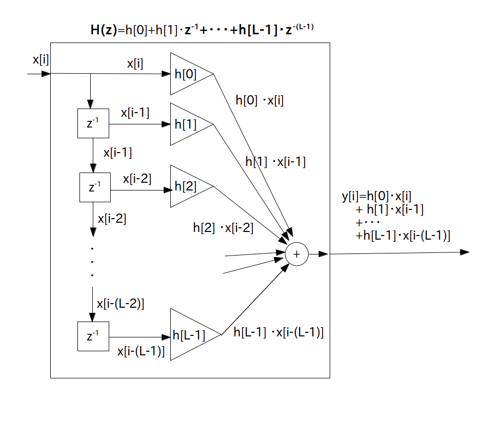

この学習項目ではFIR フィルタのインパルス応答 $h[i]$ を逆離散フーリエ変換により導出したいと思います。
FIR フィルタを考える前に、まずインパルス応答が時刻 $-\infty$ から $\infty$ まである仮想のディジタルフィルタを考えます。
このフィルタは時刻 $0$ にインパルス信号を入力する前からインパルス応答が出力されているという不思議なフィルタなので現実には存在しません(非因果的なディジタルフィルタと呼びます)。
それでこのフィルタのインパルス応答を Z 変換して伝達関数を求めます。
インパルス応答が時刻 $-\infty$ から $\infty$ まであるディジタルフィルタのことを非因果的なディジタルフィルタと呼び、その伝達関数は以下で表される。
\begin{align*} \textrm{H}(z) = \sum_{i=-\infty}^{\infty} \{ h[i] \cdot z^{-i} \} \end{align*}
ここで、$\sum$ の範囲が $-\infty$ から $\infty$ まであることに注意する。
今まで考えてきたような $\sum$ の範囲が $0$ から $\infty$ までのZ変換のことを片側Z変換と呼ぶが、$\sum$ の範囲が $-\infty$ から $\infty$ まであるZ変換のことを両側Z変換と呼ぶ。
この伝達関数に $z = \textrm{e}^{j \cdot w \cdot \tau}$ を代入して周波数特性 $\textrm{H}(w)$ を求めます。
ここで $\tau$ [秒] はサンプリング間隔です。
ここから少しトリッキーな話になりますが、どうせディジタル信号にはナイキスト角周波数よりも大きい角周波数のサイン波は含まれていませんので、周波数特性$\textrm{H}(w)$ は偶関数かつ周期 $w_s$ [rad/秒] の周期性角周波数領域アナログ信号であると考えます(図1)。
ここで $w_s$ [rad/秒] はサンプリング角周波数です。

するとインパルス応答は $\textrm{H}(w)$ の逆離散フーリエ変換となります。
以下準備中